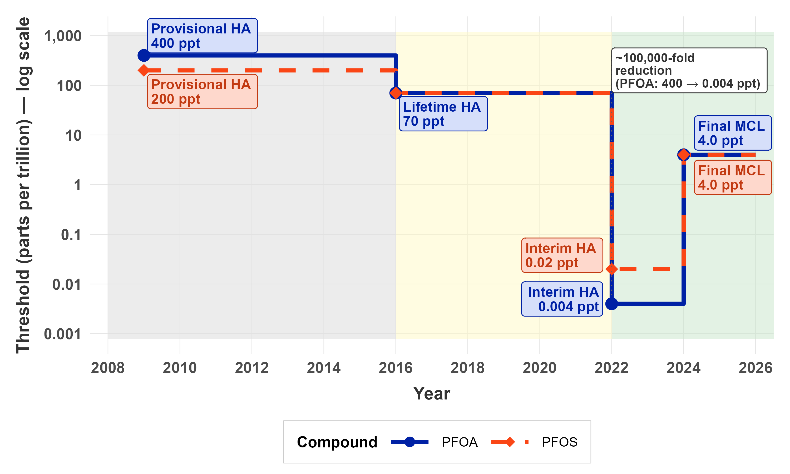
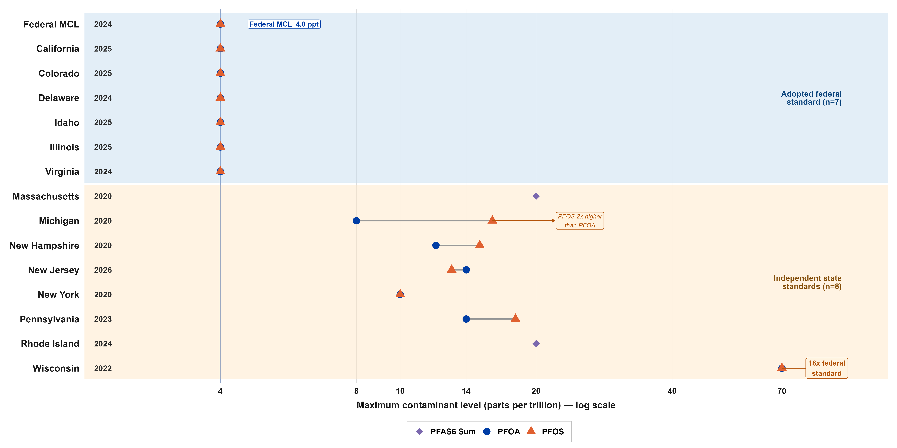
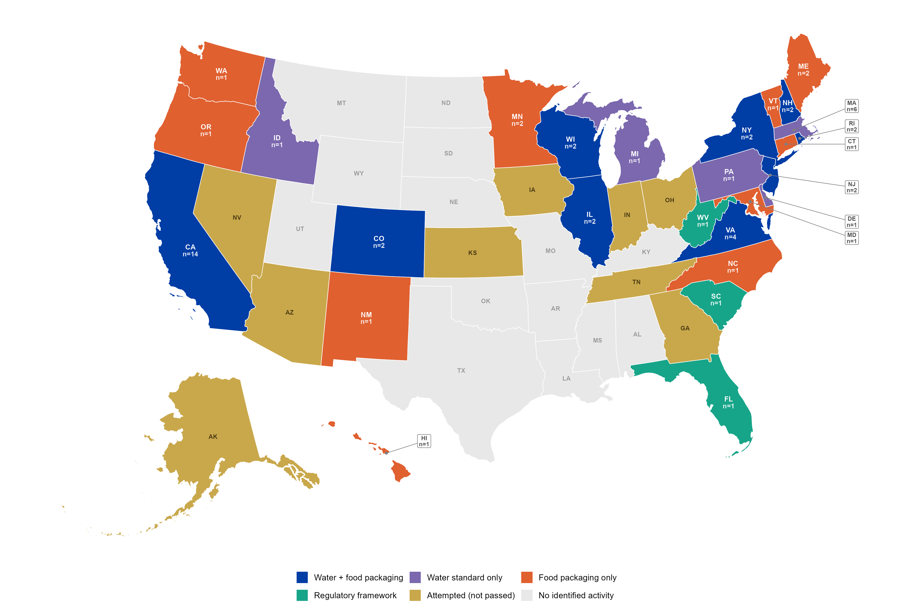
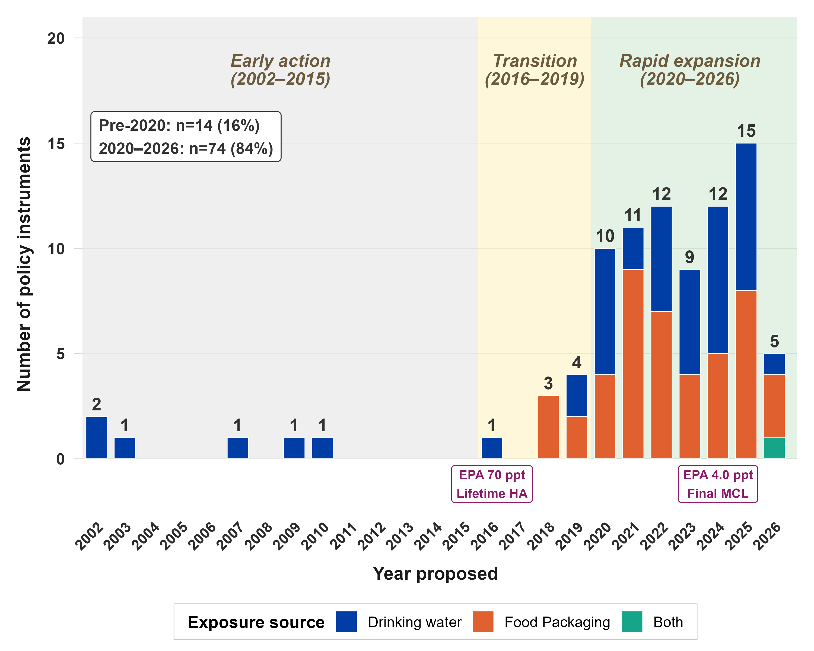
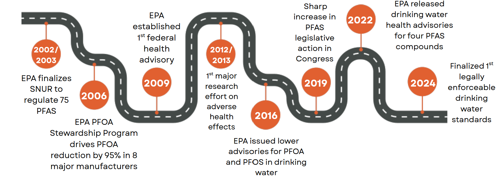

PFAS Policy Across the U.S.: Analysis and Visualization for a Narrative Review
This is active graduate research (College of Public Health and Health Professions, University of Florida). The manuscript is in preparation, and the work has been presented as conference posters. My role was the R data analysis and all data visualization, the five figures shown below.
The question
Per- and polyfluoroalkyl substances (PFAS) are persistent “forever chemicals” linked to serious health outcomes, and U.S. regulation of them is famously inconsistent: different limits in different states, gaps for private wells and food, and a federal framework that only recently caught up. Our team set out to map that landscape systematically. How fragmented is PFAS policy across U.S. drinking water and food, and how has it evolved over time?
I owned the part that turns that question into evidence: assembling and analyzing the policy data in R, and designing every figure used to communicate it.
Data
A structured narrative review catalogued roughly 85 policy instruments (federal and state, drinking water and food) drawn from journal databases (PubMed, Scopus, Embase, Google Scholar) and grey literature (federal, state, and local department documents), screened in Covidence. My job was to take that catalogue, messy, multi-jurisdictional, and inconsistently coded, and make it analyzable: classifying instruments by exposure pathway, enforcement status, and jurisdictional level, then building the figures below in R (ggplot2, sf).
The visualizations
Five figures, each answering a different slice of the question. The recurring challenge was the same one that makes PFAS policy hard to communicate at all: thresholds that span orders of magnitude, which I handled with log scales so a 4-ppt federal limit and a 70-ppt state standard can sit on the same axis honestly.
How federal standards collapsed over time
A log-scale step chart tracking federal PFOA/PFOS advisories from the 2009 provisional health advisories down to the 2024 enforceable limits, roughly a 100,000-fold tightening (PFOA: 400 to 0.004 ppt interim), shown as discrete regulatory steps rather than a misleading smooth line.

How states diverge from the federal standard
A Cleveland dot plot ranking states against the 2024 federal MCL (4.0 ppt). It separates the states that adopted the federal standard from those setting independent ones, and makes the spread impossible to miss: from states matching 4.0 ppt up to Wisconsin at roughly 18 times the federal level.

Where in the country policy exists at all
A U.S. choropleth (built with sf) classifying every state by the type of PFAS instrument it has: water-plus-food, water-only, food-packaging-only, regulatory framework, attempted-but-not-passed, or no identified activity. It turns the review’s central finding into a single glance. Coverage is patchy, and 14 states have no identified policy at all.

When the policy activity happened
A stacked temporal bar chart of policy instruments by year proposed (2002 to 2026), split by exposure pathway (drinking water versus food packaging versus both). It quantifies the acceleration cleanly: 84% of all instruments emerged in 2020 or later, with the pre-2020 era a thin, flat baseline by comparison.

The federal story as a narrative timeline
A milestone roadmap of key federal actions, from EPA’s 2002/2003 Significant New Use Rule through the 2024 first legally enforceable drinking-water standards, designed for a mixed audience who needed the throughline without reading a table.

Why it matters
The whole point of this review is that PFAS policy is fragmented, and fragmentation is exactly the kind of thing that is nearly impossible to grasp from a spreadsheet but obvious in a well-built figure. The analytical and design choices, log scales for thresholds spanning orders of magnitude, a colorblind-safe palette, a choropleth that encodes policy type rather than just presence, are what let a non-specialist audience (and eventually reviewers and policymakers) see the structural inequity in the data. This is the part of research I am strongest at: making complex, messy quantitative findings legible and honest.
Status and role
Manuscript in preparation. Literature search conducted February 2026, presented as conference posters April 2026 at the University of Florida College of Public Health and Health Professions (Colectivo Lab). My contribution was the R-based data analysis and all five data visualizations across both posters. The project is collaborative, with a seven-person author team.
Links
- 🖼️ View Poster 1: PFAS thresholds, limits and advisories (PNG) covers the federal timeline, state comparison, and cross-jurisdictional tables
- 🖼️ View Poster 2: Policies and regulatory instruments, a narrative review (PNG) covers the choropleth map, temporal trends, and federal milestone roadmap
- 💻 Code on GitHub
- 📄 Manuscript in preparation, available on request
{kind=link}
{kind=link}